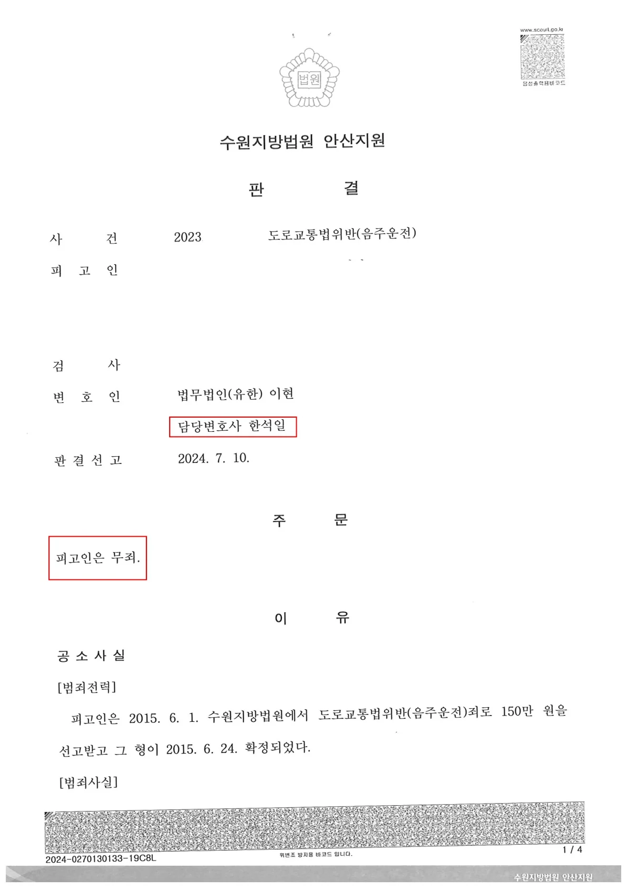

선고 직전의 사건을 수임하여, 수사 기록에 누락되어 있던 '혈중알코올농도 상승기'를 집요하게 입증해 징역 구형을 180도 뒤집고 완벽한 '무죄' 판결을 받아낸 성공 사례입니다
[핵심 요약: 본 사건의 무죄 판결 포인트]
사건 상황: 국선변호인 조력하에 변론 종결. 검사 징역 1년 6개월 구형.
적발 수치: 혈중알코올농도 0.032% (처벌 기준치 0.03%를 미세하게 초과).
전략:
측정기에 단속된 시간이 아닌, 단속 현장의 '대기 시간' 모순 발견
최초 적발 경찰관을 직접 찾아내어 '30분 지연 측정' 핵심 진술 확보
위드마크 공식(상승기)을 주장하여 이례적인 변론재개 인용 및 무죄 판결 도출
1. 국선변호인도 놓쳤던 기록 속 '30분의 공백'
당시 의뢰인의 측정 수치는 0.032%였습니다. 기존 재판에서는 이 수치 자체만 보고 위드마크 공식(혈중알코올농도 역추산)을 전혀 다투지 않은 채 재판이 마무리되어 가고 있었습니다
하지만 저는 '기록'과 의뢰인의 '기억'을 대조하며 시간의 흐름을 복기했습니다. 알고 보니, 의뢰인을 처음 단속한 경찰 RV 순찰차에는 '음주측정기'가 없었습니다.
음주측정기를 실은 다른 순찰차가 도착할 때까지, 최초 적발 경찰관이 의뢰인을 현장에서 붙잡고 대기했던 시간이 무려 약 30분이나 되었던 것입니다.
2. 발로 뛰어 확보한 핵심 증언, "위드마크 공식을 적용하라"
이 30분은 사건의 결과를 바꿀 가장 결정적인 열쇠였습니다. 측정 대기 시간 동안 의뢰인의 혈중알코올농도는 계속해서 올라가는 '상승기'에 있었기 때문에, 실제 운전대를 잡았을 당시의 수치는 처벌 기준치인 0.03% 미만이었을 가능성이 매우 높았기 때문입니다.
저는 이 누락된 사실을 입증하기 위해, 즉시 당시 현장에 공조 출동했던 관할 경찰서들의 내역을 끈질기게 추적했습니다. 수소문 끝에 측정기가 도착할 때까지 의뢰인을 붙잡고 있었던 바로 그 '담당 경찰관'과 통화하여, "현장에서 다른 차량을 기다리느라 실제 측정이 30분가량 늦게 이루어졌다"는 핵심 진술을 직접 확보해 냈습니다.
3. 선고 직전의 극적인 '변론재개', 그리고 무죄 판결
결정적 증거를 확보한 저는 즉각 법원에 '변론재개신청서'를 제출했습니다. 이미 판결문 작성 단계에 들어갔을 재판부에게, "수사 과정의 맹점을 바로잡고 위드마크 공식을 적용해 실제 운전 시점의 수치를 다시 판단해야 한다"라고 강력히 주장했습니다.
재판부 역시 이례적으로 변론재개결정을 내렸습니다. 그리고 닫혀있던 재판이 다시 열린 끝에, 재판부는 "운전 당시 혈중알코올농도가 0.03% 미만일 가능성을 배제할 수 없다"며 최종 무죄를 선고했습니다.
※ 구체적인 사건은 사실관계에 따라 달라질 수 있습니다.

 한석일 대표변호사
한석일 대표변호사